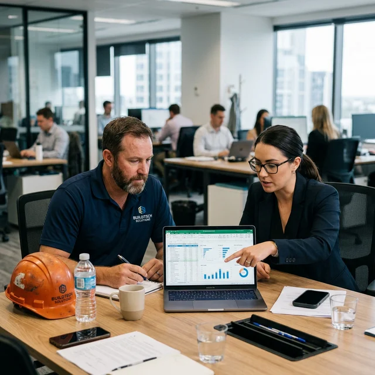

If you are a contractor relying on Angi or HomeAdvisor, you are bleeding margin to your competitors. Here is why buying shared construction leads destroys your closing rate, and the exact math behind building a self-owned lead generation engine.
Most construction businesses hit a growth ceiling the moment they stop relying purely on word-of-mouth. The immediate reaction is usually to buy lead lists or sign up for third-party lead aggregators like HomeAdvisor, Angi, or Thumbtack. Within three months, you are paying $85 for a "roofing lead CA" only to find out four other contractors bought the exact same lead, and the homeowner went with the lowest bidder who undercuts market rates by 30%.
This is a fundamental misalignment of incentives. Lead aggregators sell volume, not intent. They want a homeowner's contact information distributed to as many buyers as possible to maximize their revenue per submit. Your goal, inversely, is exclusive, high-intent traffic ready to convert at your standard margins without a race to the bottom.
This post breaks down exactly why the shared lead model mathematically fails for high-ticket construction projects, and how to engineer an exclusive inbound funnel using highly targeted Google Ads and localized SEO.
The fatal math of shared construction leads
Let's break down the actual cost of a shared lead versus an exclusive inbound lead. If you buy a shared lead for $75, the upfront cost seems acceptable. However, because that lead is sold to four competitors simultaneously, your closing rate drops significantly. Assuming a standard 10% closing rate on heavily contested leads, you need to buy 10 leads to secure one contract.
Your true Cost Per Acquisition (CPA) is $750. But it doesn't end there. The invisible cost of shared leads is margin compression. Because the homeowner is fielding four identical quotes, they invariably treat the project as a commodity. To win the bid, contractors routinely drop their quotes by 10% to 15%. On a $15,000 remodeling project, sacrificing 15% margin costs you $2,250 in sheer profit.
Therefore, the real cost of that "cheap" $75 lead is actually $3,000 (the $750 acquisition cost plus the $2,250 in sacrificed margin). When you compare this to an exclusive lead generated through your own website—even if that exclusive lead costs $250 to acquire via PPC—you retain your pricing power and close at a higher bracket (often 25-30% because they called you specifically). An exclusive lead that costs $250 with a 25% close rate yields a CPA of $1,000, saving you $2,000 per project compared to the aggregator model.
Numbers don't lie. Stop competing on borrowed turf.
How a self-owned lead generation engine actually works
A self-owned lead engine relies on capturing user intent exactly at the moment a homeowner or commercial property manager realizes they have a problem. This requires a dual-pronged approach: Google Ads for immediate, high-intent queries (bottom-of-funnel), and Local SEO to dominate long-term geography-based searches.
1. The exact architecture of a high-converting landing page
Before you spend a single dollar on ads or SEO, the destination must be optimized for conversion. Sending traffic to a generic homepage is the fastest way to burn your marketing budget. A high-converting landing page for construction leads requires strict adherence to intent-matching.
If a user searches for "commercial remodeling leads CA", the landing page they land on must explicitly state "Commercial Remodeling in California" in the H1 tag. The hero section must feature a trust-building element immediately: "Licensed, Bonded, Insured — Serving Southern California since 2012."
Below the fold, skip the generic "About Us" fluff. Provide proof of execution. Include before-and-after imagery of specific projects, accompanied by the duration and scope of work. Finally, the form must be frictionless but qualifying. Ask for the project type (Roofing, HVAC, Generic Remodel), the expected timeline (Urgent, 1-3 months, Exploring), and their zip code. The friction of the timeline dropdown filters out low-intent tire-kickers, preserving your sales team's time.

2. Google Ads: The "Exact Match" sniper approach
The biggest mistake contractors make with Google Ads is using "Broad Match" keywords. If you bid broad match on "contractor leads", Google will inevitably show your ad to people searching for "how to become an independent contractor" or "cheapest handyman near me". You pay $18 a click for garbage traffic.
Instead, use Exact Match and Phrase Match targeting layered with strict geographic fencing. Focus on queries that indicate immediate commercial intent and high transaction value. For example:
- [custom builder leads los angeles]
- "roofing replacement quote CA"
- [b2b construction contractors near me]
Furthermore, deploy negative keyword lists aggressively. Add words like "cheap", "diy", "jobs", "salary", "how to", and "calculator" to your negative keyword list before launching. This ensures your ad budget is exclusively spent on users actively seeking to hire a professional builder or contractor.
In a recent teardown of a generic GC campaign, we audited a $5,000 monthly ad spend. By replacing broad match keywords with a tightly scoped exact match strategy and adding 300 negative keywords, we reduced their p99 lead acquisition cost from $450 to $185—a 2.4× improvement in efficiency without changing their total budget.
3. Local SEO: Dominating the "Near Me" ecosystem
While PPC generates immediate exclusive leads, Local SEO builds your organic moat. The cornerstone of local SEO for the trades is a hyper-optimized Google Business Profile (GBP) and localized service pages.
Google evaluates three core pillars for local rankings: Relevance, Distance, and Prominence. To engineer relevance, your website architecture must reflect your exact service offerings mapped to specific cities. Do not just have one "Services" page. Create distinct pages for "Concrete Contractor in [City]", "Paving Leads CA", and "Heavy Equipment Contractors [County]".
Each local service page should include embedded Google Maps routing from central landmarks, geo-tagged project portfolios, and schema markup (LocalBusiness structured data). Schema markup explicitly feeds Google your exact coordinates, operating hours, and accepted payment methods, circumventing the need for the crawler to "guess" your business details.
For prominence, velocity of reviews matters more than total volume. A contractor with 40 reviews spread evenly over two years ranks higher than a contractor who got 100 reviews in one month and went silent. Implement an automated SMS follow-up sequence using a tool like Jobber or Housecall Pro that texts the homeowner a direct link to your Google Review page immediately upon receipt of the final payment.
What we tried that didn't work
It is important to discuss the failures in the contractor space to prevent you from making the same expensive mistakes. Over the past five years, we attempted to map several different lead acquisition strategies. Here is what failed spectacularly.
1. Facebook Lead Forms for High-Ticket B2B Construction Leads: We attempted to run Facebook Lead Generation forms targeting commercial property managers for B2B construction leads. The cost per lead looked incredible—averaging $22. However, the lead quality was unworkable. Users were mindlessly scrolling, auto-filling their Facebook data, and submitting forms with zero underlying intent. Out of 150 leads, only 2 converted into actual site walk-throughs. The friction on Facebook is too low; it generates curiosity, not intent.
2. Cold Emailing Homeowners: We scraped public property records to find homes over 20 years old and deployed a cold email sequence offering roofing inspections. The open rate was a dismal 12%, and the spam complaint rate immediately tanked the domain reputation, preventing legitimate client emails from delivering. Cold email works for B2B SaaS; it is toxic for local B2C trades.
3. Pay-Per-Click without Dedicated Landing Pages: Early on, we routed Google Ads traffic straight to a contractor's homepage. The bounce rate hovered at 82%. A user searching for "HVAC leads CA" landing on a page that mostly talks about custom home building feels disjointed. If the user doesn't see their exact query mirrored in the headline within three seconds, they click "Back". Routing to the homepage burned $3,400 in two weeks with zero signed contracts.
Trade-offs: Aggregators vs. Building Your Own Engine
There is a scenario where buying shared leads makes sense: when you are a solo operator who launched business yesterday, lacks the capital for a sustained $2,000/month SEO and Ads budget, and desperately needs cash flow to survive the quarter. In that highly specific scenario, Angi or Thumbtack can provide the immediate lifeblood required to keep the lights on.
However, the trade-off is your autonomy and scalability.
Aggregators (The Rental Model): You are renting access to an audience. You own zero equity. If the platform raises its lead prices by 40% tomorrow, your margins instantly vanish. Furthermore, the clients you win belong to the platform's brand, not yours. They are unlikely to remember "John's Custom Builders"; they remember they used HomeAdvisor.
Self-Owned Engine (The Equity Model): You are building digital real estate. Yes, the upfront capital investment is higher. Yes, SEO takes three to six months to begin compounding. But once you rank for "best commercial builders near me", every click is free. Furthermore, all leads are 100% exclusive to your team. You control the narrative, the pricing, and the follow-up cadence.
The long-term play is unambiguous: treat marketing not as an expense, but as an infrastructure investment. A well-oiled SEO and PPC machine is an asset that directly increases the valuation of your construction company.
Advanced Tactics: Retargeting the "Almost" Converts
A hidden leak in most construction marketing funnels is the failure to retarget. In B2B construction leads or high-ticket remodeling, the sales cycle can extend from 30 to 90 days. A property manager does not hire a concrete contractor the first day they formulate a Google search.
They will visit your site, read your portfolio, check your pricing page, and then leave to compare three other vendors. If you do not have the Meta Pixel and the Google Ads Remarketing Tag installed on your site, that prospect is gone forever.
By implementing a retargeting campaign, you follow that highly qualified user across the internet. For the next 30 days, while they read the news or scroll Facebook, they see a subtle, professional ad showcasing a completed commercial remodeling project by your firm. This "omnipresence" builds subconscious trust. Retargeting clicks are extraordinarily cheap (often under $1.50) because you are only bidding on an audience of people who have already shown historical intent on your specific domain. This tactic alone routinely lifts overall conversion rates by 12% to 18%.
The role of Content Marketing in Construction
Content is generally misunderstood in the trades. Plumbers do not need to write 500-word daily blog posts about "The History of Copper Pipes". That generates zero exclusive leads.
Instead, content must be hyper-focused on bottom-of-funnel pain points. Create deep, technical comparisons answering the exact questions your sales team fields every day. Examples:
- "TPO vs. EPDM Roofing for Commercial Warehouses in California: A Cost Analysis"
- "Permitting Timelines for Custom Builders in Los Angeles County (2026 Update)"
- "Why Radiant Heating Fails in Older Slab Foundations"
These highly specific articles will inherently have low search volume, and that is entirely the point. Someone searching for "history of pipes" is a student. Someone searching for "TPO vs EPDM roofing cost CA" is a property manager holding a $150,000 budget looking for immediate technical validation. When they find your deeply knowledgeable, Sentry-style breakdown of the materials, you establish immediate authority. They no longer see you as a commodity contractor, but as a consultative partner.
Tracking and CRM Integration: The Cardinal Rule
Finally, a self-owned lead engine is useless if you cannot track the origin of your signed contracts. "Knowing" you get leads from the internet is insufficient. You must know exactly which ad group, which keyword, or which organic post generated the $40,000 remodel.
Use dynamic number insertion (DNI) software like CallRail. DNI dynamically swaps the phone number on your website depending on the traffic source. If a user clicks a Google Ad, they see Phone Number A. If they arrive organically, they see Phone Number B. The software records the call, tracks the source keyword, and pushes that data directly into your CRM (HubSpot, GoHighLevel, or specialized contractor CRMs like Buildertrend).
When you align your marketing spend explicitly to closed revenue rather than "clicks", you can ruthlessly cut underperforming campaigns and double down on the keywords driving actual enterprise value.
How to transition away from shared leads today
You cannot flip a switch and turn off your aggregators overnight without risking your cash flow. The transition requires a phased, 90-day approach.
Month 1: The Foundation. Audit your current website. Fix the loading speed, rewrite the H1 tags to match specific services and locations, and install tracking pixels (Google Tag Manager, CallRail). Do not spend ad money yet.
Month 2: The PPC Bridge. Launch a tightly scoped, exact-match Google Ads campaign focused solely on your highest-margin service. Allocate 20% of your current aggregator budget to this campaign. Measure the CPA of the exclusive leads against the shared leads.
Month 3: The SEO Engine. Begin deploying localized service pages and optimizing your Google Business Profile velocity. As your exclusive inbound lead volume from PPC and SEO stabilizes, systematically throttle down your shared lead buys. Decrease your Angi spend by 25% every month until it hits zero.
Stop leasing your customer base. Take control of your digital infrastructure and build a lead generation engine that actually drives equity back into your business.